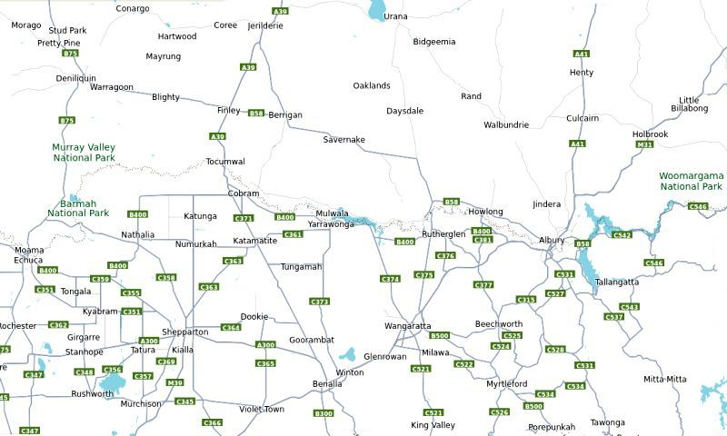
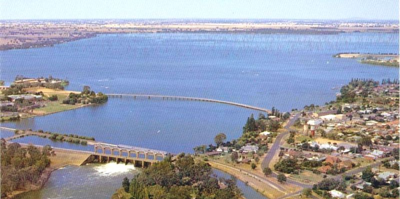
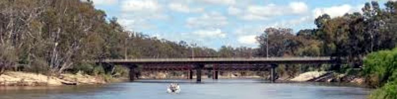
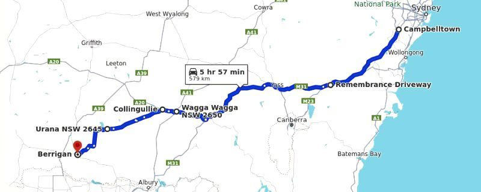

NAVIGATION
TOP of Page
MAIN Page
HOME Page
PREV Page
NEXT Page
ON THIS PAGE
MAP
ABOUT
MURRAY RIVER
DRIVE SYDNEY
FURTHER INFO
RIVERINA AREAS
Albury-Wodonga
Federation Council
Berrigan Shire
North-West
Campaspe Shire
Moira Shire
Shepparton G.C.
Benalla R.C.
Indigo Shire
Silos & Waterways
|
MAP

Map Of The Lower Riverina (NSW) and Sun Country (VIC)
TOP
MAIN
HOME
PREV
NEXT
ABOUT
The Local Region can be described as an area within a 2 hour drive radius of Mulwala (NSW) /
Yarrawonga (VIC). For example a typical drive from Mulwala to Albury/Wodonga takes about 1 hr
15 mins. Most travel can be achieved on the Hume Motorway, Regional Highways and decent
Secondary Tarred Roads. Only in exceptional circumstances will there be a requirement to travel
on a dirt road, however this is optional for viewing outstanding vistas hidden in remote locations.
This analysis begins in the east at Albury-Wodonga and then heads west to visit the towns on the
NSW side of the Murray River. If there is a twin town separated by a bridge, then these will be
described as a pair. We then head north-west to visit the sparsely inhabitated region with the local
small towns. Eventually we end up at the western extreme at the twin towns of Moama/Echuca.
We then head south-west from Moama/Echuca to visit some of the larger towns in the Goulburn
Valley including Shepparton, Benalla and Wangarratta. A detour enables a visit to some of the
interesting smaller towns having painted silos and other points of interest. We then visit the wine
growing area around Rutherglen and then return to Albury/Wodonga.
This trip is not expected to be done in a single day. Set out each day from your accommodation and
proceed generally in each point of the compass. I would expect a week to fulfill all your demands
for sight-seeing. Things to look out for include wineries, regional pubs and restaurants, painted
silos plus regional museums, parks and scenic outlooks.
In conclusion - New South Wales has the wide, flat land with extensive canals, large farms and
low population density due to the smaller towns with their superb town-side lakes. Victoria has the
intermittently hillier country, smaller farms, many wineries, painted silos and a slightly more semi-
urban environment supporting numerous decent restaurants, hotels, historic places and museums.

Lake Mulwala, 100 km west of Albury on the Murray River
TOP
MAIN
HOME
PREV
NEXT
THE MURRAY RIVER
The Murray River winds it's way westward along the southern border of the shire from
Boomanoomana to Barooga and Tocumwal. Two bridges cross the river into Victoria at Barooga (to
Cobram) and at Tocumwal (to Koonoomoo). Along the reach of the river are 25 sandy beaches, as
an ideal place for camping, fishing and watersports. The whole of the river is NSW territory, as the
border is actually on the land on the Victorian side. Thus a NSW boating license is required.
All fishing methods for any species of fish is prohibited from September to November (inclusive) in
the whole of the waters of the Murray River and its tributaries. This enables fish such as the
Murray Cod to restock the river. A fishing license is required, with a daily bag limit of two Murray
Cod per person and a total possession limit of four applies when fishing in any inland waters.
Fishers are required to release Murray Cod which are smaller than 55cm, or bigger than 75cm,
with the least possible harm.
Drinking water for each township is derived from the river after undergoing processing in a Water
Purification Plant. This enable the supply of two water sources to each house - unprocessed for
garden use and processed for use inside the house. This explains the twin water meters with a
separate water supply account for each source.

Murray River Bridge between Cobram (VIC) and Barooga (NSW)
TOP
MAIN
HOME
PREV
NEXT
DRIVE SYDNEY TO LOWER RIVERINA
To avoid obvious tourist destinations and still achieve either luxury motels and clubs or cheap and
cheerful accommodation camping near the Murray River, I would suggest investigating the towns
of Tocumwal and Barooga found in centrally located Berrigan Shire. There are 25 sandy beaches
between the two towns for camping plus in-town caravan parks and extensive hotel and motel
accommodation for the large Golf and Sports Clubs. Berrigan and Finley have extremely cheap
hotel and motel accommodation with both being only 20 minutes drive from the Murray River.

Drive from Sydney via Hume Highway/M31 to Berrigan Shire (580 km at 6 hrs)
Campbelltown, NSW to Wagga, NSW via Hume Motorway/M31
Follow the Hume/M31 Motorway/Highway to the Sturt Highway/A20 turnoff north of Tarcutta.
North of Tarcutta turn left onto the Sturt Highway/A20 exit
Distance is 356 km taking 3 hrs 30 mins.
Wagga, NSW to Berrigan, NSW via a detour avoiding Albury/Wodonga
Continue on the Sturt Highway/A20 through Wagga Wagga,
At Collinguilie turn left onto Lockhart Road,
At Lockhardt turn Right onto the Reid Street/Urana-Lockhart Road/Brookong Creek Road,
At Urana turn right onto William Street/Federation Way,
At Urana turn left onto Chapman Street/Cocketdegong Road,
Turn left onto Back Barooga Road,
Turn Right onto Berrigan-Oaklands Road which becomes Oaklands Road,
Arrive at Berrigan.
Distance is 224km taking 2 hrs 30 mins.
BERRIGAN SHIRE
Link Berrigan Shire
You now need less than 40 mins to drive to your destination and settle into your accommodation.
Berrigan is entered on Carter Street onto the roundabout at the centre of the CBD.
While in Berrigan stop at the Berrigan Bakehouse for a meal - highly recommended.
Finley - From Berrigan take the Riverina Highway/B58 (Chanter Street) west,
Enter Finley on the Riverina Highway (Berrigan Road),
Turn left onto the Newell Highway/A39 (Murray Street) to find the CBD.
From Berrigan to Finley the distance is 21.8 km taking 16 mins.
Tocumwal - From Finley take the Newell Highway/A39 (Murray Street) south,
Enter Tocumwal on the Newell Highway/A39 (Dean Street),
Turn left at the roundabout before the Murray River bridge,
Enter Tocumwal on Deniliquin Road to find the CBD just past the small roundabout.
From Finley to Tocumwal the distance is 21.1 km taking 16 mins.
Barooga - From Berrigan take the Riverina Hwy/B58 (Jerilderie Street) southeast,
Turn right onto Berrigan Road, which becomes Cobram Road and again Berrigan Road,
Enter Barooga on Nangunia Street, past the Botanic Gardens it becomes Vermont Street "Mall".
From Berrigan to Barooga the distance is 31.7 km taking 21 mins.
From Tocumwal to Barooga the distance is 18.0 km taking 14 mins.
Cobram, VIC - From Barooga, continue on Vermont Street to cross the Murray River bridge.
Turn left onto High Street, then turn right at the roundabout onto the Punt Road CBD.
The population is 60% the size of Berrigan Shire, making it a convenient shopping centre.
From Barooga to Cobram, VIC is 4.0 km taking 5 mins, half of which is the Murray crossing.
TOP
MAIN
HOME
PREV
NEXT
LINKS TO FURTHER INFORMATION
Aussie Towns
An A-Z of Australian Towns | Towns by State and Region
Visit the Murray
Things to Do | Places to Go | Where to Stay | Make a Plan
Discover the Murray
Learn About, Explore and Discover the Murray River
Visit N.S.W.
Places To Visit NSW | The Official Guide To NSW
Travel N.S.W.
Travel Guide including tourist information and attractions
NSW National Parks
Information on National Parks and Reserves in NSW
Visit Victoria
What's On | Explore by Region | Discovery Map
Travel Victoria
Experience Victoria's culture, activities and nature
Victoria Places
Home | Browse A-Z | Map | About | Contact
Parks Victoria
Protect our state's natural and cultural heritage
TOP
MAIN
HOME
PREV
NEXT
|